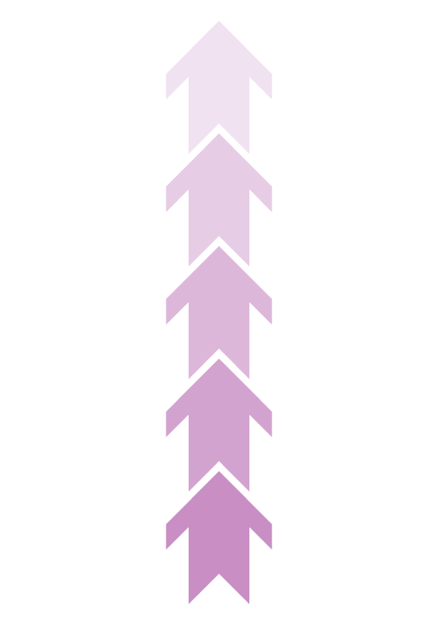
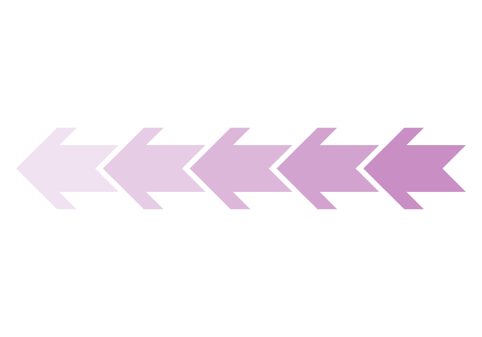
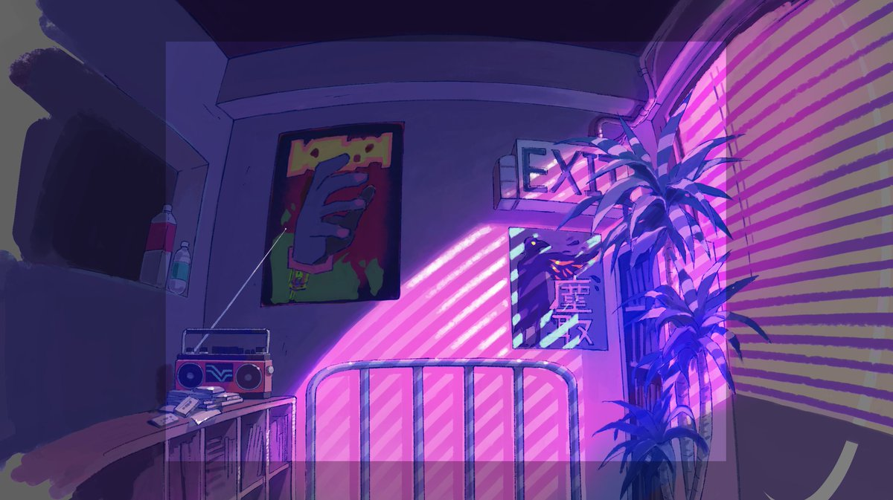

ずっと真夜中でいいのに。
Home
YouTube
Twitter
ずっと真夜中でいいのに。のファンサイトです。曲やグッズの紹介を個人の好みでします。
ずっと真夜中でいいのに。
ZTMY
総再生回数○○回
ぬゆり
100回嘔吐
ボーカルの歌声
楽器隊 全部かっこいい
コピー難易度：鬼
ずっと真夜中でいいのに。
ZTMY
総再生回数○○回
ぬゆり
100回嘔吐
ボーカルの歌声
楽器隊 全部かっこいい
コピー難易度：鬼
 
Songs
お勉強しといてよ
Introduction
英語名： STUDY ME
配信日： 2020年5月15日
再生時間： 4：40
作詞： ACAね
作曲： ACAね
編曲： 矢野達也, 100回嘔吐, ZTMY
映像： はなぶし、ヨツベ
再生回数： 61,399,800 回（2023/01/11）
Album
『お勉強しといてよ』
『ぐされ』
『朗らかな皮膚とて不服』
『TOKYO - TikTok 2020 -』

ミラーチューン
Introduction
英語名： MIRROR TUNE
配信日： 2022年4月7日
再生時間： 4：09
作詞： ACAね
作曲： ACAね
編曲： 100回嘔吐, ZTMY
イラスト： TV♡CHANY
再生回数： 11,342,485 回（2023/01/11）
Album
『ミラーチューン』
『Viral Now Japan 2022』
『夏フェス 2022』
『Winter Study - 勉強応援ソング』
『Summer Festival Japan 2022』
胸の煙
introduction
配信日： 2021年2月10日
再生時間： 4：18
作詞： ACAね
作曲： ACAね
編曲： 100回嘔吐, ZTMY
映像： Shino
再生回数： 7,115,054 回（2023/01/11）
Album
『ぐされ』
彷徨い酔い温度
introduction
配信日： 2019年6月12日
再生時間： 4：52
作詞： ACAね
作曲： ACAね
再生回数： 168,823 回（2023/01/11）
Album
『今は今で誓いは笑みで』
Lives
ROAD GAME『テクノプア』~叢雲のつるぎ~
at. 国立代々木競技場第一体育館
Date： 2023.01.14 Sat 〜 2023.01.15 Sun
GAME CENTER TOUR 『テクノプア』
Date： 2022.09.30 Fri 〜 2022.12.22 Thu
「RISING SUN ROCK FESTIVAL 2022 in EZO」
Date： 2022.08.12 Fri 〜 2022.08.13 Sat
Goods so far ...